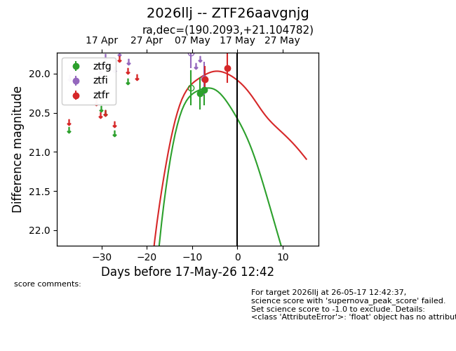
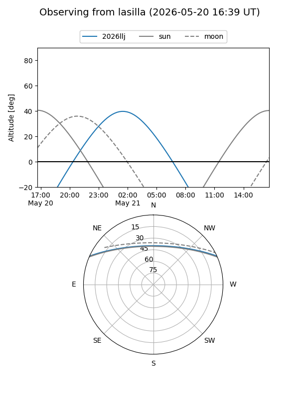
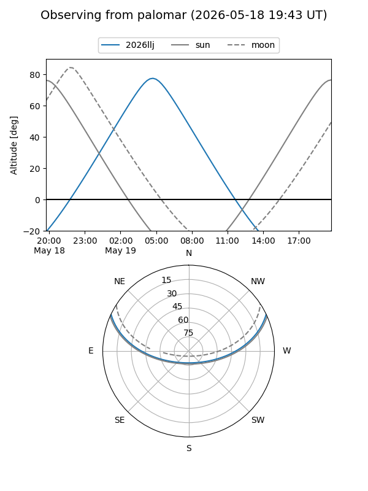
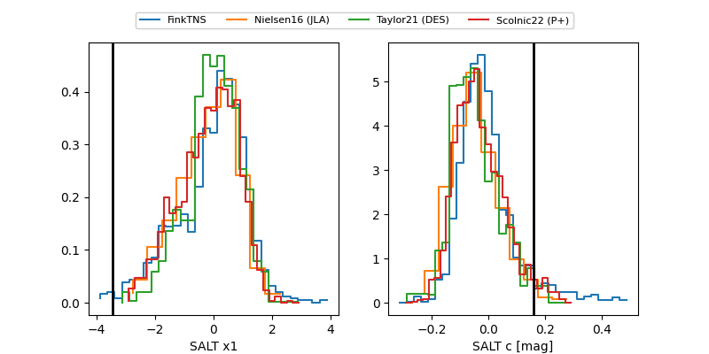

2026llj
Target 2026llj at 2026-05-17 12:44
Aliases and brokers:
FINK: link
Lasair: link
ALeRCE: link
TNS: link
YSE: link
alt names
ZTF26aavgnjg (ztf,fink_ztf)
2026llj (tns,yse)
Coordinates:
equatorial (ra, dec) = 190.2093,+21.10478
equatorial (HMS+DMS) = 12:40:50.24,+21:06:17.22
galactic (l, b) = (280.4981,+83.50968)
Flags:
Photometry:
last ztfg=20.21, ztfr=19.93
2 ztfg, 2 ztfr detections
Lightcurve

Visibility


Additional plots
